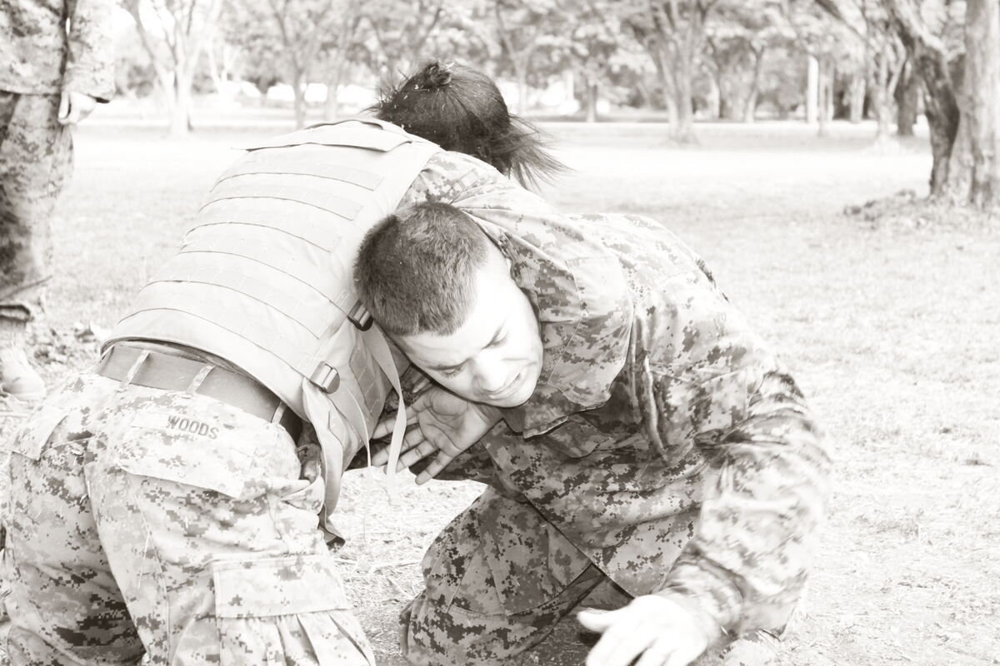

BJJ · Concept
Clinch
Clinch in Brazilian jiu-jitsu is the standing control range where you connect with underhooks, overhooks, collar ties, or a body lock—winning the pummel before a takedown, snap-down, or scramble into the front headlock.
What Is Clinch?
In sport BJJ and MMA-adjacent grappling, the clinch is the connected standing range between free striking distance and a committed shot. Once hands and heads meet, the fight becomes a contest for inside position: who owns the underhooks, who frames the biceps, and whose hips sit closer to the opponent’s centerline.
Unlike a pure takedown entry that changes levels immediately, clinch work often stays upright first—pummeling to double underhooks or a body lock—then finishes with trips, knee taps, or snap-downs into the front headlock. It also bridges to Muay Thai-style plum control when knees are legal, and to judo-style grip fighting when the gi is on.
Martial Index treats the clinch as a standing cousin of guard connection: frames, posture, and hip pressure start here on the feet.
How Clinch Works
Establish contact without parking your head outside: forehead pressure and ear position matter as much as hand fighting. Pummel one arm at a time—clear their underhook, insert yours, reset posture, repeat.
Prefer underhooks for hip control; use an overhook to stall their underhook and set whips or Russian ties. A locked body lock turns the clinch into a portable cage—walk them, load a hip, finish the trip.
If they shoot, convert: sprawl hips to the mat, chest to their shoulders, and hunt the front headlock rather than standing tall.

Gi vs No-Gi
Gi. Collar-and-sleeve frames, lapel body locks, and judo-style sleeve grips expand the toolkit; you can stall with stiff arms or drag into classical throws.
No-gi. Underhooks, wrist rides, and head position dominate. Without cloth, pummeling speed and hip heaviness matter more—expect more front-headlock finishes.
What Does It Look Like in Practice?
Alex wins an underhook pummel, steps offline, loads a body-lock knee tap, and lands in side control without a classical double-leg.
Jordan loses the pummel, gets snapped down, and immediately frames into a front-headlock scramble rather than giving up a clean mat return.
Types / Variations
Underhook / body-lock clinch
Double or single underhooks with hip connection—primary path to body-lock trips and outside trips.
Collar-tie / over-under clinch
Wrestling-style head control mixed with an underhook; sets snap-downs and front-headlock entries.
Plum / double-collar (striking rules)
Muay Thai double collar tie—more relevant when knees are legal; in pure BJJ it still teaches posture breaking.
Entries, Counters, and Escapes
Entries: jab-to-clinch (MMA rules), level-change feint into underhook, or standing exchanges after a failed guard pull.
Counters: frame the biceps, whizzer hard, circle out, or accept a snap-down and win the front-headlock race. Escapes: peel underhooks, posture up, and re-shot or disengage when rules allow.
Clinch Finish vs Level-Change Shot
| Factor | Clinch-first | Shot-first |
|---|---|---|
| Primary tool | Pummel + body lock / trips | Penetration step + finish |
| Risk profile | Head position & knees (rule-dependent) | Sprawl vulnerability |
| Common follow-up | Front headlock, mat return | Pass or scramble |
| Gi utility | Very high (grips) | High but grip-dependent |
Special Considerations
IBJJF, ADCC, and sport context
Standing clinch itself is generally legal; illegal striking, certain neck cranks, and stalling rules still apply. Always verify the current IBJJF and ADCC books for grip restrictions and slam definitions—this page is orientation, not a rulebook.
Safety
Clinch training stresses necks and knees. Drill pummeling with controlled tempo, tap early on neck pressure, and avoid driving partners onto their heads during trips.
Common mistakes
- Standing square with your head outside—inviting the snap-down.
- Grabbing a body lock with hips far away (no trip leverage).
- Ignoring the sprawl when they change levels.
- Treating clinch as rare “wrestling day” instead of a weekly skill block.
FAQ
Questions we hear on the mats, in forums, and under instructional videos—answered in Martial Index voice.
Is the clinch the same as a body lock?
A body lock is one clinch configuration—hands clasped with chest/hip connection. Clinch also includes over-unders, collar ties, and plum control.
Should BJJ athletes learn pummeling?
Yes. Pummeling decides underhook ownership and quickly improves standing exchanges without full-time wrestling.
Gi or no-gi clinch first?
Learn pummeling mechanics no-gi, then add collar/sleeve frames in the gi—the underhook logic transfers.
How does clinch relate to guard pulling?
If you pull guard from a failed clinch, you often land in open or seated guard; if they snap you down, you may face front-headlock pressure.
What beats a strong underhook?
Whizzer/overhook, posture change, circle toward their back, or force a hips-away scramble.
Is clinch work useful for IBJJF?
Yes for takedown opportunities and to avoid bad front-headlock exchanges—verify scoring in the current book.
How often should I drill clinch?
Short, frequent pummeling rounds (2–5 minutes) beat rare long wrestling-only classes.
The Bottom Line
The clinch is standing connection: win the pummel, own the hips, then choose trip, snap-down, or disengage. Link it to sprawl defense and front headlock offense so your feet game feeds your ground game.